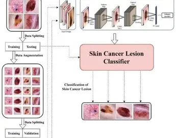

Skin Cancer Detection Using CNN is an intelligent deep‑learning project designed to classify dermoscopic images as benign or malignant using advanced Convolutional Neural Network architectures such as ResNet‑18 and MobileNetV2, achieving an accuracy of 77.8% on real‑world medical datasets. The system includes image preprocessing, augmentation, and feature extraction to improve prediction reliability, and it is deployed through a Flask‑based web application that allows users to upload skin images and receive real‑time predictions with confidence scores. This project demonstrates how AI can support early detection and assist in medical decision‑making by providing fast, accessible, and user‑friendly diagnostic insights.
This project is a Java‑based application developed to manage student information in an organized and efficient way. It includes features such as adding new students, updating details, tracking attendance, storing marks, and generating reports. The system uses Java for backend logic and MySQL for database storage, ensuring fast data processing and secure record management. It helps educational institutions reduce manual work and maintain accurate student data.